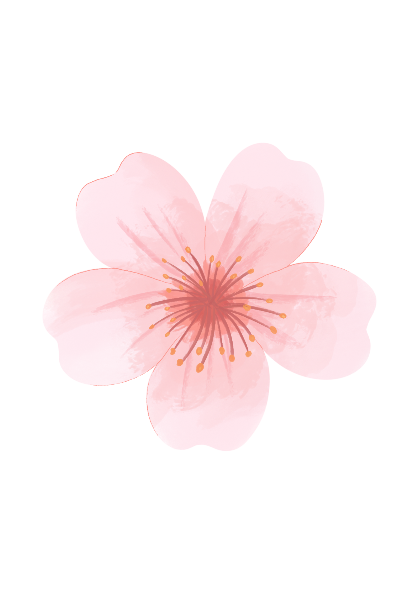

LOFY
|
吳品潔PIN-CHIEH
嗨，我是來自雲科大的雙主修學生，主修資訊管理，副修創意設計。
我擅長整合需求、視覺設計與數位工具應用，喜歡用設計解決問題，創造貼近人心的體驗。
目前持續累積相關實作經驗，期望未來成為能串連品牌與客戶的設計人才。
學歷
Education國立雲林科技大學 資訊管理系
國立雲林科技大學 創意設計系(雙主修)
實習經歷
Professional Experience大樹國際文化企業股份有限公司
- 協助一間沒有 IT 部門的連鎖教育機構進行數位轉型。
- 專注於前端介面開發，負責頁面設計、互動流程優化與資料呈現。
- 協助團隊打造客製化的內部管理系統。
語言能力
Languages英文
日文
關鍵技能
Key Skills常用軟體
- Figma
- illustrator
- photoshop
3D建模
- Blender
- Sketchup
- AutoCad(2D、3D)

作品集 | PORTFOLIO